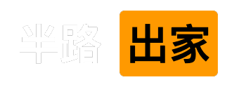

数学爱好者.
统计学渣.
技术宅.
数码爱好者.

Hello I'm
我是一个数码爱好者，同时也是一个数学爱好者，然而统计学却学的很烂，如果你有什么建议或者有什么想法，欢迎联系我
I'm font of digital device and technology as well as mathematics, however, my statistics sucks. Email me if you want to.
So we beat on, boats against the current, borne back ceaselessly into the past.
My Blog Contact